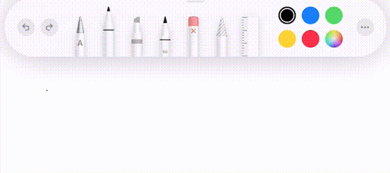
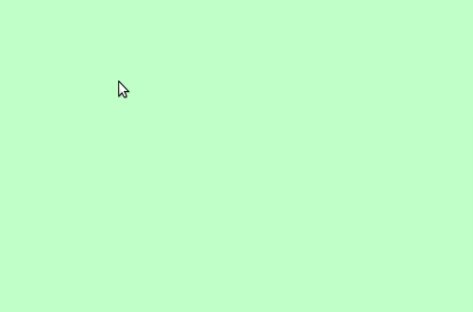
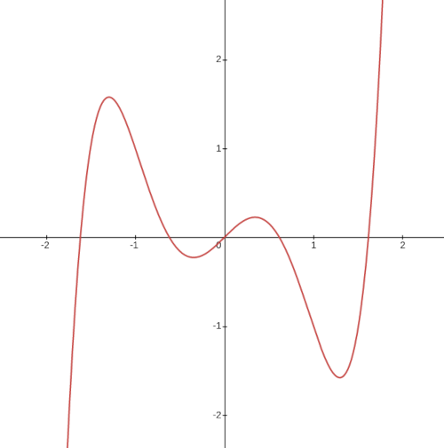
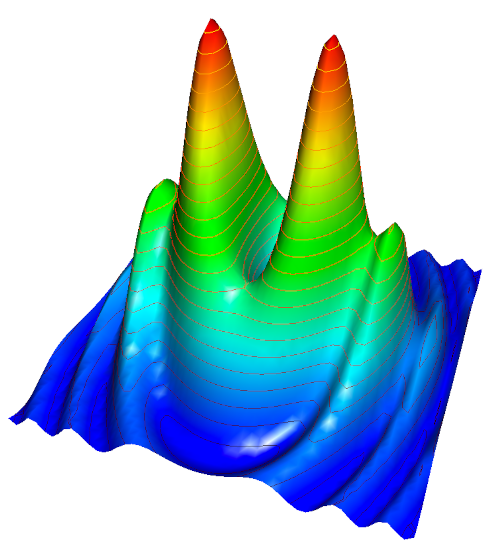
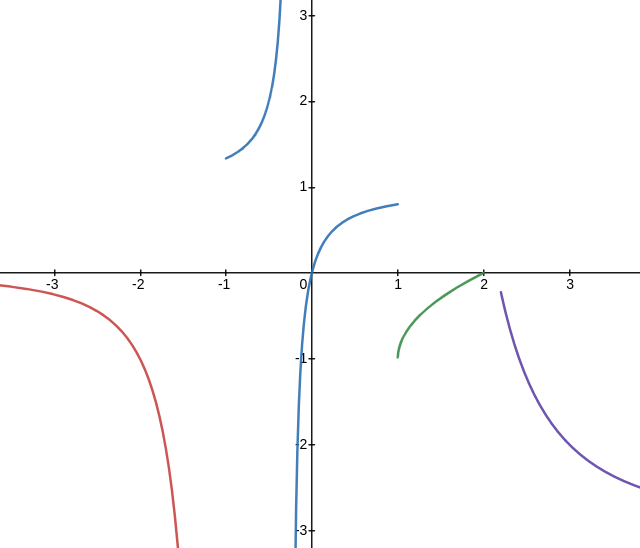
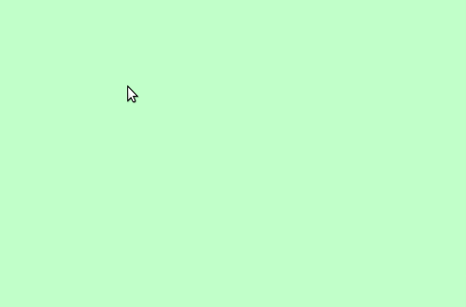
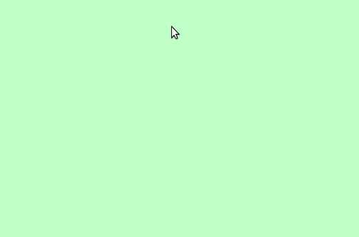
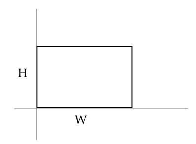
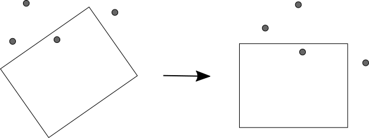
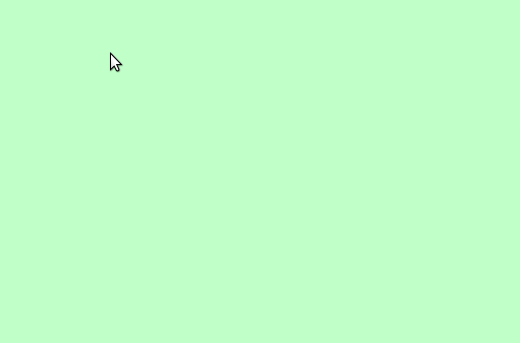

Why Train When You Can Optimize?
By: Justin Meiners
View the final code at the GitHub repo
Multi-variable optimization is an incredibly useful tool for writing software.
It allows you to specify a desired result and delegate finding the solution to a reliable algorithm.
If you know what you want but not how to get it, optimization can probably help.
Problems with many interacting variables that are unmanageable with traditional programming approaches become straightforward when using optimization.
Optimization has been researched by mathematicians for decades and plays an essential role in fields like classical mechanics and control theory.
But, only recently has it become popular in software due to its role in machine learning.
Unfortunately, most programmers' understanding of optimization is restricted to training neural networks.
The potential for optimization as a general software tool isn’t being realized,
despite being very general and accessible.
Furthermore, many deep learning applications can be restated as optimization problems,
with better results.
In this article, I will introduce optimization by creating a drawing assistant that refines hand-drawn figures into perfect shapes. This project is written in JavaScript using the <canvas> element.
- Project setup
- Optimization overview
- Drawing assistant overview
- Lines
- How do optimizers work?
- When do optimizers fail?
- Circles
- Simple rectangles
- Transformed rectangles
- Combining all shape fits
- What is the connection between deep learning and optimization?
- Further study
1. Project setup
This project is inspired by the drawing feature in the iPad notes app (with Apple Pencil).
As you draw a figure similar to a line, circle, etc,
it will detect the intended shape and offer to replace the rough drawing with a perfect one.

This is great software design.
It complements the abilities of a human with the precision of a computer.
It manages to be even easier than drawing with a real pencil and paper
by restricting the set of possible choices to those that are actually useful.
It’s also not the kind of feature you would typically see in a desktop application.
Just think of how hard it would be to program with a traditional approach.
“Look for angles close to 90 degrees, if the shape has exactly four of them arranged in the following way.. then.. else.”
What a mess!
Even if we get something working, it will have so many edge cases that it will never work well enough to trust.
2. Optimization overview
Multi-variable optimization is about finding minima of functions that take many inputs and produce a single output.
Given a real valued function f\colon \mathbb{R}^{n} \rightarrow \mathbb{R},
we want to find a point a = (a_{1}, \ldots, a_{n}) \in \mathbb{R}^n so that
f(a) \leq f(x) for all x, or at least the x in some region.
An optimizer is an algorithm that attempts to do this automatically.
It intelligently tests many different variable assignments
until it finds one that minimizes f.
Later, we will provide more detail about how it works and identify a few mathematical requirements for f that allow it to be optimized.
So, how can optimization help our drawing project?
As mentioned before, optimization is useful for solving problems where you know what you want, but not all the steps to get there.
First, we need a model of the problem.
You may already have one in the form of a black box.
This may be a piece of code or a physical system, and you just want it to behave
a certain way.
Otherwise, you may have an intuitive idea of a problem and need to construct your own model.
The important part is describing all the variables at play (there may be hundreds!) and how they relate.
With a good model, solving the problem is then a manner of finding
inputs that give the intended results.
So, how do we configure all the variables in the models to get the desired outcome?
Depending on the problem, you may be able to solve it directly,
like the math and physics homework practiced in school.
But, with optimization, all we have to do is describe what a good configuration looks like.
We do this by defining a cost or preference function
that takes all the variables as input and
measures how well they match our desired outcome.
This is the function f \colon \mathbb{R}^{n} \rightarrow \mathbb{R}
that we will eventually want to optimize.
The idea is to define the cost function f carefully, such that the variables that minimize f will also be good solutions to our application.
This is harder than it sounds.
It’s always difficult to express an intuitive idea in a precise quantitative manner.
Often you think you want one thing, only to learn you actually need something else entirely.
But, with a little thought and experimentation, we can become confident that
f expresses what we want.
When f is defined, we hand it off to the optimizer to find a minimum.
Assuming the algorithm is able to find a
minimum, this result will satisfy the preferences expressed by our function
and consequently solve the problem.
3. Drawing assistant overview
Let’s try applying this approach to the drawing assistant.
First, let’s describe part of the model.
The user will draw a path by hand.
This is represented by an array of points, in order, that form a stroke.

We then want to classify whether its intended shape is a line, circle, rectangle, or neither.
The path is then replaced with the ideal shape that matches it.
The drawn path could be positioned anywhere in the canvas, as well as rotated, scaled, etc.
How do we find the particular shape and transformation which best matches the drawing?
This sounds hard!
But, once again, with optimization, we don’t have to worry too much about actually
finding the shape.
If we can clearly specify a cost function that expresses how well a shape matches our drawing,
then we can let the optimizer do the work of actually finding the shape.
Template
I have provided a template that takes care of the drawing part.
If you want to follow along by writing your own code, here are the files you will need:
- math.js: A vector math library that also includes an optimization algorithm. (docs)
- draw.js: Simple canvas code for mouse input and drawing. (docs)
These can be loaded in a trivial HTML template, with <canvas id="main-canvas">
somewhere in the body.
4. Lines
The line is a simple shape to start with.
We first need a mathematical model to describe it.
I have chosen to describe it as an origin and angle.
The formula y = mx + b could be used in other contexts,
but doesn’t work for vertical lines (undefined slope).
Two points in the plane could also work,
but you have to be careful to avoid the case of them overlapping.
So to represent a line in this form we need 3 real variables:
Now we need to define a cost function f which measures
how well a given line, specified by these variables, fits our drawing.
A natural choice to start with is the sum of squares
of the distances from each point to the line:
\begin{equation} f(x_{1}, \ldots, x_{n}) = \sum_{i=1}^{n} d(x, L)^{2}\end{equation}
where L is the set of points in the line.
Here is this formula written in code:
function sumOfSquares(distances) {
return distances.reduce((total, term) => total + term * term, 0);
};
function lineDistance2(points, line) {
const normal = line.direction.orthogonal();
const distances = points.map(p => Vec.sub(p, line.origin).dot(normal));
return sumOfSquares(distances);
};
Used by 1
The code uses a direction vector instead of the angle,
This is more convenient for measuring distance and can be derived immediately from the angle.
This is a good start, but it’s not a cost function yet.
To make it one, we need to remove all parameters that are not variables.
Recall that origin and angle are the only variables we want to determine.
The points in the drawn path are fixed and should not be changed.
We do this by constructing a closure that captures the constant inputs (also known as currying).
The closure will take a single array as input (this is what the optimizer expects).
We then need to pull it apart to get all the variables to pass to the function above.
function varsToLine(vars) {
return {
origin: new Vec(vars[0], vars[1]),
direction: Vec.fromAngle(vars[2])
}
}
function makeLineCost(points) {
return vars => lineDistance2(points, varsToLine(vars));
};
This is now a cost function, ready to pass to an optimizer!
We are almost ready.
However, all optimizers require some configuration and tuning.
For ours, we need an initial point.
This is a rough guess of where the minima will actually be.
The optimizer will start by looking in a region around this point.
The center of the drawing (the centroid of points) is a good guess for the origin.
But, we don’t have a good guess for what the angle is.
We also need an iteration limit, which specifies the
number of steps the optimizer will take to find a minimum.
Be warned that this is proportional to how
many times the cost function will be called!
Efficient cost functions are important to good performance.
@{line cost function}
function tryLineFit(points) {
const centroid = Vec.centroid(points);
const initial = [ centroid.x, centroid.y, 0 ];
const result = multivarOptimize(initial, makeLineCost(points), {
maxIterations: 1000
});
return {
cost: result.cost,
path: lineToDrawing(points, varsToLine(result.vars))
};
};
@{line to drawing}
Used by 1
We need one more function to help turn our final answer into an actual drawing to display.
Note that our line model describes the infinite line that fits the drawing.
After the optimizer finds the best one, we need to trim it to the proper length to match the drawing.
function lineToDrawing(points, line) {
const distances = points.map(p => Vec.sub(p, line.origin).dot(line.direction));
const start = Math.min.apply(Math, distances);
const end = Math.max.apply(Math, distances);
return [
Vec.add(line.origin, Vec.scale(line.direction, start)),
Vec.add(line.origin, Vec.scale(line.direction, end))
];
};
Used by 1
To see this code work in the template, define the following function (which will be called
in the draw.js file):
function tryShapeFit(path) {
return tryLineFit(path);
}
Used by 1

Isn’t that exciting?
Note: Linear regression might come to mind as a more direct solution to the line fit problem.
It is probably better for lines, but it does not generalize to all the shapes that we want to draw,
nor does it demonstrate the general problem-solving approach.
5. How do optimizers work?
Now that you have seen an optimizer solve a problem, let’s review how they work.
If you look at a graph of a function, you’ll notice the maxima and minima points always occur at peaks and valleys.
A little thought reveals this to be obvious.
If a point is on a slope, it can always get smaller by walking downhill.
You may recall from calculus that these points can be found by finding where the slope (derivative) is 0.

So, most optimizers tend to work by “stepping” down the slope of a function until they find a valley.
They also use some tricks to avoid getting trapped in small valleys
(in hopes of finding big valleys),
but following slopes downhill is their basic mode of operation.
In the case of multiple variables, more tricky situations can occur,
so finding minima is more difficult and time-consuming, but the idea is the same.

Note: For those interested, this collection of test functions illustrate some difficult situations.
The important thing to remember is that all optimizers make assumptions about the structure of the cost function.
For general optimizers, that usually means the function is continuous (it doesn’t have breaks and hopefully has some hills), and some number of derivatives exist (we can compute downhill directions).
In practice, small discontinuities and other minor imperfections tend not to matter,
but broadly, there must be peaks and valleys that the optimizer can actually follow.
Given a totally random function, the optimizer can’t do anything but test values in a brute force manner.

Exercise: Verify that the line cost function we defined is differentiable.
Which optimizer is used here?
In this project, I use the Nelder-Mead algorithm.
We won’t dig into it how it works here. Alex Dowad has written a brilliant article and visualization for those curious.
Nelder-Mead is convenient because it doesn’t require much extra information besides the function itself (many algorithms require providing an explicit derivative).
The tradeoff is it doesn’t have a strong theoretical background and can be slower.
A good heuristic is that it should give similar results to gradient descent,
but will be much slower (especially with many variables).
I reach for it first to experiment and then upgrade if it is no longer adequate.
6. When do optimizers fail?
The challenge for mathematicians who design optimization algorithms
is to ensure they find minima, and that they do so in a reasonable amount of time.
In this article, we don’t have to worry much about the optimizer failing,
as the problem only involves a few variables with simple cost functions.
Furthermore, if it does fail, the results aren’t catastrophic.
We either get a slightly worse shape fit, or if it fails entirely,
the cost of the output will be high,
and we can simply reject and ignore it.
However, in optimization problems with many variables and complex cost functions,
finding a minimum in a timely manner, or even at all, becomes a real challenge.
This is where a great amount of theory has been developed to classify
cost functions and pair them with algorithms that are guaranteed to give meaningful results.
(It’s a field you can get a Ph.D in.)
One way to verify that the optimizer is failing is by manually constructing examples with lower
cost than the optimizer is finding and checking their cost against the cost function.
If it’s what you expect, then the optimizer is just not finding it.
For most software applications, it’s just a matter of tuning the cost function
and the parameters (like the initial guess) to get things working.
Exercise: Experiment with the iteration limit parameter for line fit. When does it start failing to converge?
7. Circles
Now we return to the drawing assistant.
We will make things more interesting by adding a few more shapes.
Circles are almost as easy to represent as lines.
Once again, we have three variables:
Just like for the line, we can find the distance from each point in the drawing to the circle.
The cost function is constructed using the sum of squares.
function circleDistance(point, circle) {
var v = Vec.sub(point, circle.origin);
return Math.abs(v.len() - circle.radius);
};
function circleDistance2(points, circle) {
return sumOfSquares(points.map(p => circleDistance(p, circle)));
};
function varsToCircle(vars) {
return {
origin: new Vec(vars[0], vars[1]),
radius: vars[2]
}
};
function makeCircleCost(points) {
return vars => circleDistance2(points, varsToCircle(vars));
};
Used by 1
For the optimization, we can once again use the centroid of the drawing
as a guess for the origin of the circle.
A good guess for the radius of the circle is the size of the bounding
rectangle around the drawing.
@{circle cost function}
function tryCircleFit(points) {
const centroid = Vec.centroid(points);
const [minPoint, maxPoint] = Vec.bounds(points);
const initial = [
centroid.x, centroid.y,
Math.max(maxPoint.x - minPoint.x, maxPoint.y - minPoint.y)
];
const result = multivarOptimize(initial, makeCircleCost(points), {
maxIterations: 1000
});
const circle = varsToCircle(result.vars);
if (!circleMatches(points, circle)) return null;
return {
cost: result.cost,
circle: circle
};
};
@{circle matches}
Used by 1
With the circle, we have a new problem to solve.
Sometimes the optimizer finds a circle which is close to all the points in the drawing,
but is much larger.
For example, if we draw a slightly curved line, the optimizer
can fit it closely by making a giant circle that is mostly off-screen.

This behaviour is usually unexpected.
To correct for it, we can ensure the size of the circle is close to the drawing.
We do this by measuring their relative path lengths and verifying they are similar.
function circleMatches(path, circle) {
const circumference = 2.0 * Math.PI * circle.radius;
if (circumference < 10) return false;
const ratio = Vec.pathLen(path) / circumference;
return Math.abs(ratio - 1.0) < 0.15;
};
Used by 1

Exercise: Experiment with different initial variables. How do they affect output quality?
8. Simple rectangles
The circle was about as simple as the line due to symmetry.
Now we come to a real challenge.
A rectangle can come in any position, size, and angle.
How can we model this?
Like any complex problem, we can break it down into manageable parts.
In this case, we can focus on defining the model for a simple rectangle first,
and worry about transforming it later.
The simple rectangle model we start with is an axis-aligned box, with one corner at the origin.
It’s defined entirely defined by two variables:

Let’s define a function that measures the distance between a simple axis-aligned box and a point.
Unfortunately, even for this simplified model, there is no clean formula.
We have to handle nine different cases,
which are the possible sections of the plane
the point could be in.
function classify(x, min, max) {
if (x < min) {
return -1;
} else if (x > max) {
return 1;
} else {
return 0;
}
}
const sideX = classify(point.x, 0, size.x);
const sideY = classify(point.y, 0, size.y);
Used by 1
When the point lies within a corner section,
its distance to the box is the distance from the corner.
Otherwise, the distance is one of its coordinate components.
function simpleRectDistance(point, size) {
@{rect side classification}
switch (sideX) {
case -1:
switch (sideY) {
case -1: return point.len();
case 0: return -point.x;
case 1: return Vec.dist(point, new Vec(0, size.y));
}
case 0:
switch (sideY) {
case -1: return -point.y;
case 0: return Math.min(point.x, point.y, size.x - point.x, size.y - point.y);
case 1: return point.y - size.y;
}
case 1:
switch (sideY) {
case -1: return Vec.dist(point, new Vec(size.x, 0));
case 0: return point.x - size.x;
case 1: return Vec.dist(point, size);
}
}
};
Used by 1
Exercise: Describe what a “heat map” style visualization of this distance function would look like.
The conditional statements are a good indicator that the function we are defining
might be problematic for the optimizer.
We need to be careful about its continuity and differentiability.
A little analysis will show it is indeed continuous and in only a few places not differentiable.
So, this is likely a safe function.
Exercise: Determine the set of points where simpleRectDistance is not differentiable.
With a distance function, we can now define a measure of fit,
using the sum of squares.
function simpleRectDistances2(points, size) {
return sumOfSquares(points.map(p => simpleRectDistance(p, size)));
};
9. Transformed rectangles
That works for simple axis-aligned rectangles, but we still need to handle the general rectangle case.
Let’s introduce an affine matrix transformation to rotate and position the rectangle.
Don’t worry if you aren’t too familiar with matrices.
The important idea is it combines the rotation and translation into one operation.
Including the size of the rectangle and the transformation matrix,
there will be five total variables to optimize:
size.xsize.ytranslate.xtranslate.yangle
To measure the cost, we will apply the inverse transformation
to transform all of the points in the canvas into the local
coordinate system of the box.
In local space, the rectangle is a simple axis-aligned box!
Then we can use the simple cost functions we just defined.

@{simple rect distance}
function buildTransform(translate, angle) {
const A = new AffineTransform();
A.t = translate;
A.m = Matrix.fromAngle(angle);
return A;
};
function orientedRectDistances2(points, rect) {
const A = buildTransform(rect.translate, rect.angle);
const B = AffineTransform.inverse(A);
const localPoints = points.map(p => B.transform(p));
return simpleRectDistances2(localPoints, rect.size);
};
function varsToRect(vars) {
return {
translate: new Vec(vars[0], vars[1]),
size: new Vec(vars[2], vars[3]),
angle: vars[4]
};
};
function makeRectCost(points) {
return vars => orientedRectDistances2(points, varsToRect(vars));
};
Used by 1
This rectangle has taken more work to build the cost function,
but the optimization isn’t any harder than before.
We use the bounds of the drawing as the guess
for the box size and translation.
@{rect cost function}
function tryRectFit(points) {
const [ minPoint, maxPoint ] = Vec.bounds(points);
const initial = [
minPoint.x, minPoint.y,
maxPoint.x - minPoint.x, maxPoint.y - minPoint.y,
0
];
const result = multivarOptimize(initial, makeRectCost(points), {
maxIterations: 1000
});
const rect = varsToRect(result.vars);
if (!rectMatches(points, rect)) return null;
return {
cost: result.cost,
path: rectToDrawing(rect)
};
};
Used by 1
Like the circle, we also need to reject boxes
which do not plausibly match the drawing.
function rectMatches(path, rect) {
if (rect.size.x < 6 || rect.size.y < 6) {
return false;
}
const length = rect.size.x * 2 + rect.size.y * 2;
const ratio = Vec.pathLen(path) / length;
return Math.abs(ratio - 1.0) < 0.15;
};
Lastly, we need to convert the rect to a drawing.
Unlike circles which have a special drawing type,
we can represent the rect as a path.
function rectToDrawing(rect) {
const points = [
new Vec(0, 0),
new Vec(rect.size.x, 0),
new Vec(rect.size.x, rect.size.y),
new Vec(0, rect.size.y),
new Vec(0, 0)
];
const A = buildTransform(rect.translate, rect.angle);
return points.map(p => A.transform(p));
};

Exercise: Explain why it would be difficult to measure distance if we performed scaling in the transformation,
instead of sizing the simple rectangle before the transformation.
10. Combining all shape fits
Now that we have all our shape functions,
we will redefine the tryShapeFit function to pick the best one.
We also add a check to ensure the total cost is within a threshold.
This permits the drawing of other shapes besides the correctable ones.
function acceptableTolerance(path) {
const perPointTolerance = 6.0;
return path.length * perPointTolerance * perPointTolerance;
}
Used by 1
That’s all for the tutorial!
Exercise: Try adding another shape to the drawing assistant. Note that you might
want to try defining the distance function first. Some shapes, like ellipses, have tricky distance functions. Consider approximating.
11. What is the connection between deep learning and optimization?
You may have noticed some similarities between this project and traditional deep learning.
Optimization is a fundamental part of deep learning, but it’s not the main focus,
and is in turn, much more separated from the problem.
Instead, the approach we just used emphasizes modeling a problem mathematically and using an optimizer directly.
There is a lot of overlap between the two approaches, so let’s compare and contrast.
Differences in cost functions
The first difference is in how cost functions are constructed.
In this project, we analyzed geometric properties and designed cost
functions that reflect the outcome we wanted.
These functions were not just rough guesses.
With a little analysis, we can confirm that any shape with low cost
actually give us the desired results.
In deep learning, the cost function is constructed implicitly through training data.
Each example in a training set is a single input, and
the expected output is assigned by a person in a manner that is hopefully consistent.
The optimizer then attempts to train the neural network to fit those examples.
But, examples are discrete and usually sparse.
The gaps between examples are inferred.
Tradeoffs of training
Using training data, rather than direct modeling,
is motivated by the difficulty of describing desired output directly.
Transforming a human-understandable thought into an explicit cost function, that works as expected, is hard.
It requires careful thought, trial and error, and some physical or mathematical
modeling knowledge.
Often it’s just not feasible.
Try to imagine what the cost function must look like for a program
that identifies animals from a collection of pixels!
In such cases, deep learning allows the cost function to be developed interactively, from much less information.
Of course, acquiring training data is its own challenge.
Designing a data collection and storage process
in a way that prevents bias, gets good results, and is able to generalize
beyond the examples in the training set, is a significant amount of work.
What is gained with the simplicity of the approach must be made up with old-fashioned manual labor.
Inferring from examples is always going to be less precise than an explicit function.
But, perhaps the most worrisome problem with deep learning is the problem of induction.
A neural network may be trained on carefully picked examples
and verified using others, but how do you really know it works?
How do you know it’s going to respond well in new situations?
The only way to increase reliability is with more training and verification,
all of which are expensive and difficult.
These efforts only improve our confidence in the models, but never give certainty.
There may always be cases where they blow up and behave totally unexpectedly.
(This is part of why self-driving cars are so difficult!)
An additional challenge of training is it doesn’t behave
at all like traditional software.
A trained network is entirely opaque.
It’s difficult to inspect, debug, or describe how it works.
There is no mechanism to report how well its performing.
On the other hand, optimizing a good cost function looks more like programming.
(The kind we are comfortable with.)
We can inspect and reason about its state.
We can prove a minimum gives desired results,
and receive feedback in the form of high cost,
to communicate when it’s failing to find solutions.
Differences in problem modeling
In this project, we optimized mathematical models of lines, circles, and rectangles.
The optimizer helped find angles, coefficients, coordinates, etc
that construct shapes that fit the desired results.
Programming all of this requires some domain knowledge about geometry.
A lot of it is familiar from middle school, but some parts (like matrix transformations)
may still be a little out of reach for some readers.
Needless to say, if you haven’t studied a subject, it’s hard to model it.
The deep learning approach is much less concerned with modeling the underlying subject matter.
The variables to be optimized are typically neurons in a neural network.
Each neuron function is determined by a weighting of its inputs.
Instead of finding angles, coordinates, etc,
the optimizer just searches for the weights that make the neurons fire as the training
data expects.
This same neuron model is used regardless of the problem, in addition to a bit of layering
and feedback design.
The hope is that rather than constructing problem-specific mathematical models,
neural networks can be used as general function representations, taking on any form needed.
We have some good reasons to hope multi-layer neural networks should be able to fill this role:
- They are proven to be universal function approximators.
- They can be implemented efficiently on modern parallel compute hardware.
- There is an analogy between organic neurons and computer neurons, so there is
a hope that advantages will come from mimicking brains.
- Optimization algorithms like gradient descent work well on them (back propagation).
Tradeoffs of neural networks
These are all true and useful properties of neural networks, but they also aren’t as special as they might appear. For example, we could consider approximating coefficients of polynomials or trigonometric series instead.
Neural networks can approximate any function, but that doesn’t mean they do so efficiently.
Depending on the function, they can require incredible amounts of neurons and training.
At their worst, they devolve into a lookup table.
It’s not hard to find these examples either.
Just try training a neural network to compute sin(x)!
One challenge of designing a neural network is knowing how to structure it.
How many layers are needed? How wide? What points should have feedback, etc.
The reason why the answer to these questions is fuzzy is because if the
answer was fully known, there would be no need to make a network.
Ultimately, any attempt to tinker with these components in the network design is an attempt to more closely mirror the underlying mathematical model.
In fact, the most successful machine learning approaches (such as convolution neural networks
for image processing) use neural networks on top of the underlying mathematical model.
Image processing algorithms are based on convolving a kernel matrix with an image.
Many of these deep learning programs are simply tuning traditional kernels with an optimizer.
Applying a mathematical model tailored to a problem is much more likely to be successful,
not to mention efficient and understandable.
If you are solving a geometric problem, it’s going to work best if you construct models based on geometry, equations of lines, matrices, etc.
If you are solving a physical problem, use equations from physics and then optimize
to figure out what the parameters of those models are.
The deep learning approach is a bit like looking at a few graphs of motion and
expecting to rediscover Newton’s laws.
Conclusion
Hopefully, this discussion has clarified the roles and tradeoffs of these two approaches.
To summarize, deep learning and related machine learning algorithms
are unique in their ability to make progress on problems we have no better tools for.
Being able to identify objects in images, or generate new images or videos, is absolutely incredible.
But perhaps it is being overused.
For many problems, more direct modeling and optimization methods are available and more likely to be reliable and successful.
I hope this tutorial has given you ideas for upcoming projects.
Remember to keep optimization readily available in your toolbox!
12. Further study
Interested in learning more about optimization?
Here are several free resources, each offering a very different path to explore:
Structure and Interpretation of Classical Mechanics
This book is about physics, but explains it using code.
Unfortunately, it is still quite challenging and requires a solid math background.
As it turns out, optimization algorithms are important for finding motion paths.
This is actually where I learned about optimization for the first time,
and it happens to also use the Nelder-Mead algorithm.
Linear Programming
Linear programming is a special class of optimization problems that are generally
simpler, but have algorithms guaranteed to give answers in reasonable amounts of time.
This is a great way to learn about other optimization approaches.
Differentiable Programming Manifesto
As you get into more complex problems, getting an optimizer to work efficiently
and reliably is harder.
Providing explicit and accurate gradients is one way to help the optimizer out a lot.
Automatic differentiation is a language feature that computes derivatives of the code you write at compile time.
It makes optimization very easy and accessible.
Neural Networks and Deep Learning
Looking to understand deep learning better? This popular resource is an excellent
introduction that hits on all the main ideas and basic techniques.